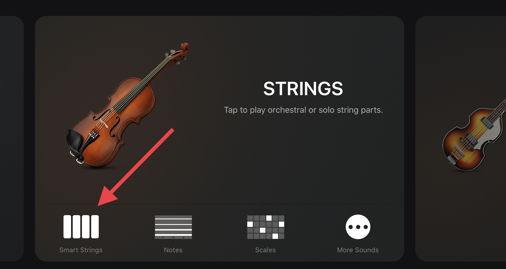
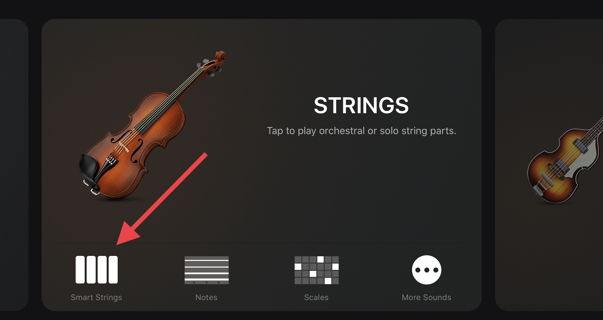
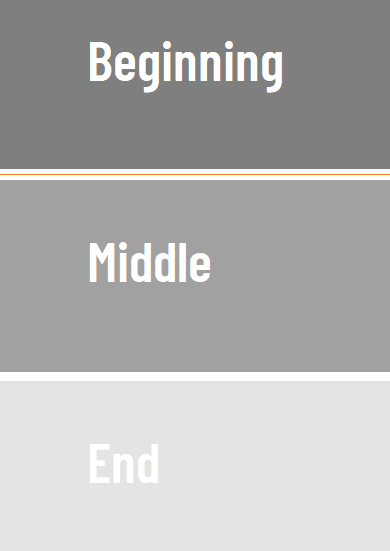
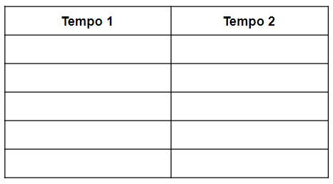
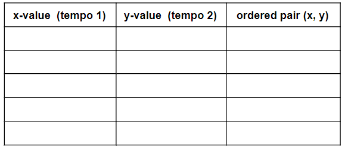

Do It! GarageBand: Spooky Story and Numerical Patterns
 The Challenge
The Challenge
Your challenge is to create a spooky story from sounds in the GarageBand app on your iPad.
You must interpret time signatures as a sequence of operations and create numerical patterns.
Getting Started
- Listen to examples of spooky or suspenseful music.
- Some good examples include the Jaws Theme Song (John Williams) and The Twilight Zone (Jerry Goldsmith.)
- Think about the ways in which composers make music sound scary and jot down some of the sounds and instruments you hear that create suspense.
The Jaws Theme
Composed by John Williams

The Jaws Theme
Listen here

Project Steps
-
Experiment and Explore
- Plan Your Story
- Document Your Ideas
- Add Sound
- Time Signatures
- Numerical Patterns and Tempo
- Tell the Story
- Customize Your Story
- Export Your Project
- Present Your Story
Experiment and Explore
 Begin by opening GarageBand and starting a new project. Select the Smart Strings. Then, switch to Notes view so you can see and play the cello fingerboard. Can you come up with 3 different ways to make spooky sounds using the cello fingerboard? Don’t forget that you can play pizzicato notes by holding down the arco/pizz button on the left side of the fingerboard while you tap your fingers on the strings.
Begin by opening GarageBand and starting a new project. Select the Smart Strings. Then, switch to Notes view so you can see and play the cello fingerboard. Can you come up with 3 different ways to make spooky sounds using the cello fingerboard? Don’t forget that you can play pizzicato notes by holding down the arco/pizz button on the left side of the fingerboard while you tap your fingers on the strings.
Once you have some spooky string techniques collected, create more spooky sounds using other GarageBand instruments.
Hint: the Drums and Keyboard instruments have a wide variety of playback sounds and options.
If you need some inspiration for making spooky music sounds/music try out some of these techniques:
Suspenseful Drone
 Select the Smart Strings and tap on the Notes button to switch to the fingerboard view. Tap and hold one finger on any of the strings to create a drone.
Select the Smart Strings and tap on the Notes button to switch to the fingerboard view. Tap and hold one finger on any of the strings to create a drone.
Suspenseful Drone #2
Open the Smart Strings, choose Notes view, and make sure the cello is selected. Play a drone on one of the cello strings (as above) and then slowly (VERY slowly!) move your finger to the right. Pause on a single pitch every now and then, and then continue to move gradually to the right again.
Dissonant Drone
Same as the previous example, but this time add a second finger on to a different string (while still holding down the first finger). 
Creepy Pizzicato Footsteps
While in the Smart Strings Notes view, select the Violin at the top of the screen. Hold down the pizzicato button on the left edge of the fingerboard and tap randomly on the top two strings, moving your fingers along the strings as you tap as if you were imitating footsteps. Increase in speed gradually as if you’re trying to escape from something!

The Terrified Heartbeat
 Open the Drums (not the Smart Drums). Play the kick drum in a slow, steady rhythm - like a heartbeat. Gradually increase the speed of the rhythm, as if the heartbeat is getting faster.
Open the Drums (not the Smart Drums). Play the kick drum in a slow, steady rhythm - like a heartbeat. Gradually increase the speed of the rhythm, as if the heartbeat is getting faster.
The Erie Piano
 Open the Keyboard and move up 2 or 3 octaves using the octave keys on the left of the screen. Choose 3 notes that are next to one another - a combination of black and white notes. Then, experiment by playing them all at the same time or one after the other, fast or slow.
Open the Keyboard and move up 2 or 3 octaves using the octave keys on the left of the screen. Choose 3 notes that are next to one another - a combination of black and white notes. Then, experiment by playing them all at the same time or one after the other, fast or slow.
Document Your Ideas
In GarageBand, you can use the Note Pad that is found under the settings tab to jot down your ideas, or your story! You can also use any app that allows you to record notes to document/plan out your storyline.
Here are just a few:
- Storyboard Template (Word)
- Storyboard Template (PowerPoint)
- Google Docs
- Google Slides
- Microsoft Word
- Microsoft PPT
- Notes App (Apple App)
- Pages App (Apple App)
You may also choose to plan out your story in your notebook or on a piece of paper. You can fold or divide the paper into 3 equal parts and label each section with beginning, middle, and end.
Plan Your Story
The Beginning is the first part of the story. It is where the writer captures the reader’s attention, either with a great opening line, a detailed description of the character or setting, or a glimpse into the topic, problem, or theme of the story. Now that you have explored a bunch of spooky sounds, it’s time for you to plan your story. Give yourself some brainstorming time where you can work out a story and pick spooky sounds you will use. We know that every story has three main components: beginning, middle, and end. When they are all put together you have a complete story.
- The Middle is where the bulk of the story rests. It explains the topic, gives important key details, and holds the reader’s attention, but most importantly it is where we reach the climax or turning point of the story.
- The End is where the story comes to a close. It is the conclusion and solution to the problem. It is where the character learns a lesson or comes to terms with the events that have happened.
It is important that when we are creating a storyline, we are structuring our story with a beginning, middle, and end.
Add Sound
Using your story map, think about which sound(s) would best portray each line of the story. You may include several sounds for the same line.
- As you go through your story, make a list of words that you will need to find sound effects for.
- Write the matching sound down next to the word or words it represents.
- Find the sounds in the collection you created, or you can choose to browse the Sound Library that is located in the GarageBand App.
Time Signatures
- Read how to change the time signature of your music here. Remember that the top number in a time signature gives the number of beats in a measure and the bottom number gives the beat value.
- Set the time signature to . How would doubling the top number affect the time signature? You could represent this as , or as the sequence of operations . This results in a time signature of, which means that there will be 6 beats in a measure rather than 3.
- Using three different time signatures from your sound story, perform operations on each, and represent each product as a sequence of mathematical operations. Explain what each product means in terms of the music.
Numerical Patterns & Tempo
- Identify two different tempos you will use in your story. Information about how to change the tempo can be found here.
- For each one, create a numerical pattern using addition or subtraction. Use the same operation for both. For example, if your tempo is 60 beats per minute, then the total number of beats after each minute can be represented by the numerical pattern 0, 60, 120, 180, 240, etc. That’s a rule of adding 60.
- Explain how you decided on each numerical pattern and the rule for each pattern.
- Generate ordered pairs based on the corresponding values from your sequence.
- Graph the ordered pairs using graph paper.
- Explain the relationship between the two sequences of tempos.


Tell the Story
- Put together the sound effects you found to “tell” your story.
- Sound effects must be placed in GarageBand in the order found in your story.
- Leave space in between each sound effect to enhance the telling of the story.
- When you are done recording the sounds that best communicate your story, rearrange and trim your sound pieces to best match how you want your story to sound.
- Finally, you can adjust the volume on each track with the sliders, making sure to listen for any that stand out too much or get lost in the mix.
Keep your story 1-2 mins long to allow your story to flow better.
Customize Your Story
Drag each sound or Loop into the Tracks area and make changes to the collection of sounds to flow more like a story.
- Apply a patch to change the timbre, effects, and other settings.
- Change the tempo or other project properties as needed.
- Change the key and scale if you want the notes to start at a higher or lower pitch, sound brighter, or more melancholic.
- You can make these changes to the overall project or just specific tracks or regions.
When you’re done editing, listen to it a couple of times and make any final adjustments before you export your finished piece.
Questions to Guide Your Thinking:
- Is there a sound for every visual event?
- Are all sounds lined up with the visual events?
- Did I set the volume for each sound effect appropriately?
- Did I set the pan for each sound effect appropriately?
- Could I use more volume and pan automation to make the sound effects more exciting?
Exporting Your Project
Depending on how you want to save and share your project, here are a few options:
- Save and Share Project to iCloud
- Save and Share to Media Browser
- Share Project using AirDrop
- Share Project by Exporting to Disk
Present Your Story
Once your masterpiece is complete it is time to perform or share the story! You can present the Spooky Story for the rest of the class or to a group. No talking allowed!
As you play your story, have your peers listen carefully and either have them draw out a picture or write down what they think is going on in the story.